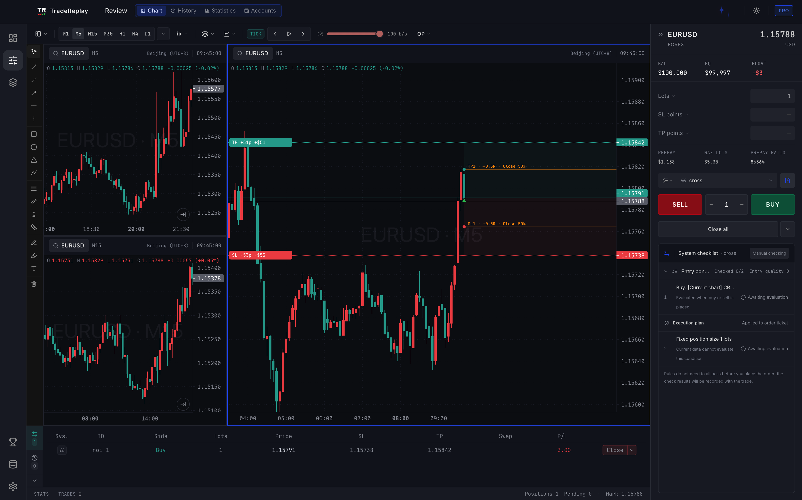

交易复盘与训练 · 桌面软件
你交易哪个市场？
两个版本是两套独立的软件。一个账号两边都能登录，会员分开购买。
外汇 · 贵金属 · 国内期货 · 加密货币
v1.58.0 已发布
上次浏览
TradeReplay外汇期货版
把盘感练成交易系统。
- 127 个品种，其中 82 个国内期货
- 交易系统、策略扫描、自动回测
- 导入 MT4、MT5、期货监控中心账单

沪深 A 股 · 全市场
内测中
上次浏览
TradeReplay股票版
收盘后，把今天复盘清楚。
- 盘后看板：涨停、炸板、连板梯队、情绪温度
- 条件选股，先看过去的次日表现
- 逐笔五档回放和个股盲练

外汇、贵金属、国内期货和加密货币，选外汇期货版；沪深 A 股，选股票版。